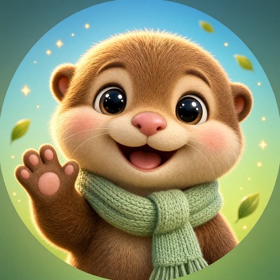

Short Generator
Short Generator is the private production tool of Oopsiloo Cartoons, an independent YouTube channel of gentle 3D cartoon stories for kids aged 3 to 10, set in the little village of Tiddlebrook.
The tool runs on the channel owner's own computer. It helps write and illustrate each story, then, once the owner has reviewed and approved a video, it uploads it to the Oopsiloo Cartoons channel, adds it to the channel's playlists and reads the channel's YouTube Analytics reports to plan the next stories.
It is not a public service: only the owner of the Oopsiloo Cartoons channel signs in with Google, and only to manage that channel.
Google account access
When the owner connects the channel, Short Generator asks Google for permission to upload videos, manage the channel's playlists and view its YouTube Analytics reports. Read how this data is handled in our privacy policy.